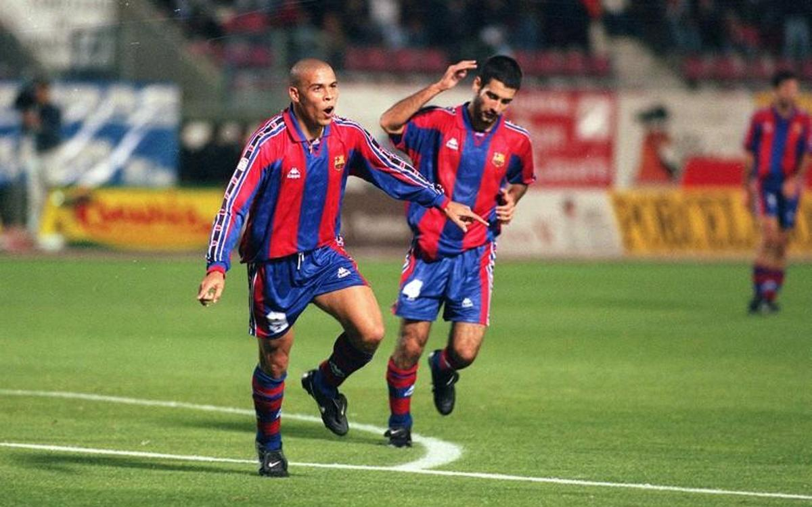

Ronaldo nazario gana la bota de oro y se convierte en el mejor jugador del mundo
El jugador del barcelona marca un doblete contra el valencia y se convierte en maximo goleador

ronaldo
publicado en 21 mayo
El jugador de barcelona hizo un explendido partido en el campo del valencia denominado mestalla y fue el mvp del partido marcando dos goles